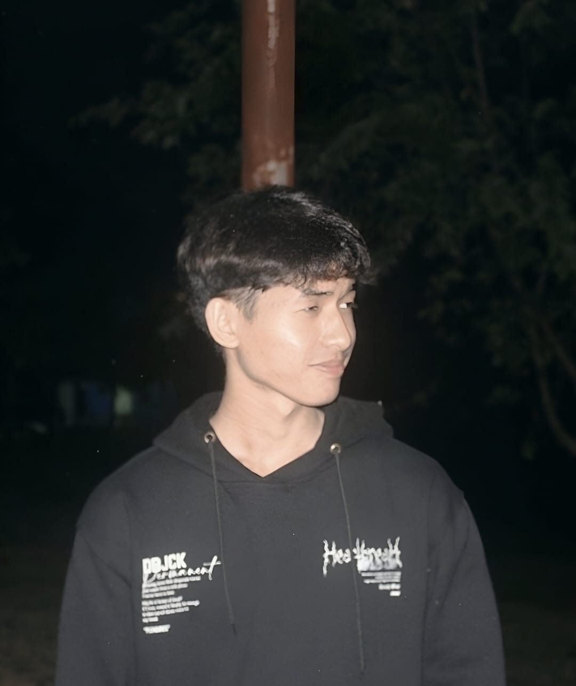

Mahasiswa Informatics Management | Web & Mobile Developer
Hello! My name is Gendri Raditia Alkindi I’m a student from the Information Technology Department at Politeknik Negeri Padang, majoring in Informatics Management. I enjoy learning about technology, especially web and mobile development. I like building useful apps and always try to improve my coding skills by working on real projects. My goal is to become a professional developer in the future.
2023 – Present | Politeknik Negeri Padang – Informatics Management
i am Currently studying with a focus on web development, mobile programming, and information systems. Gaining both theoretical knowledge and practical experience in building digital solutions.
Talent Scouting Academy – Digital Talent Scholarship 2024 Organized by KOMINFO and Oracle Academy 📅 February 19 – July 14, 2024 This certificate was given for completing a Java programming training. I learned basic Java concepts and coding skills. The training was part of Indonesia’s Digital Talent Scholarship by KOMINFO.
This certificate proves I completed a 40-hour course on AWS Cloud Operations, where I learned to manage, monitor, and secure cloud systems using AWS. It helped me build a solid foundation in cloud technology.
I received a certificate from Alfalfa Fun English Classes in June 2023 for completing the Good Basic Grammar for Speaking program. In this course, I learned simple grammar rules that help me speak English more clearly and correctly. This certificate shows my effort to improve my English skills, especially in speaking and basic communication.
I received this certificate from the Education Office of West Sumatra Province for joining the FLS2N (National Student Art Festival) at the junior high school level. I participated in the Guitar Duet category, representing my school, SMP Negeri 1 Lubuk Alung. This certificate shows my participation and achievement in a provincial art competition held in Padang in 2019.
A simple web application to display a list of the latest movies with posters, genres, and short descriptions. Built using PHP, Laravel, MySQL, and styled with HTML/CSS. Developed using Visual Studio Code and run locally with XAMPP. This project helped strengthen my skills in web development and backend logic. 🗓️ Developed in 2025.
GitHub RepoDeveloped a mobile & web-friendly note-taking application using Flutter and web technologies. Implemented features for creating, editing, deleting and organizing notes, with a clear user interface and responsive design. Managed local data storage and ensured seamless user experience across devices. I created this app in May 2025
GitHub RepoKeuanganku is a personal finance management web application developed in 2025. It is designed to help users record income and expenses, track their balance in real time, and view simple financial summaries. The project follows the MVC (Model–View–Controller) architecture using Laravel, ensuring clean, scalable, and easy-to-maintain code.
GitHub Repo